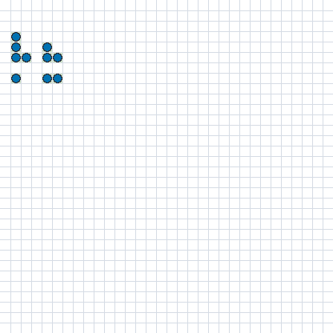
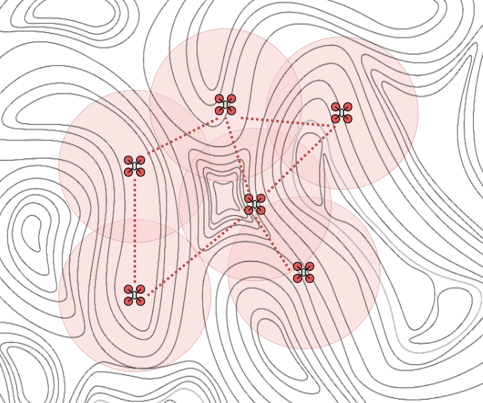
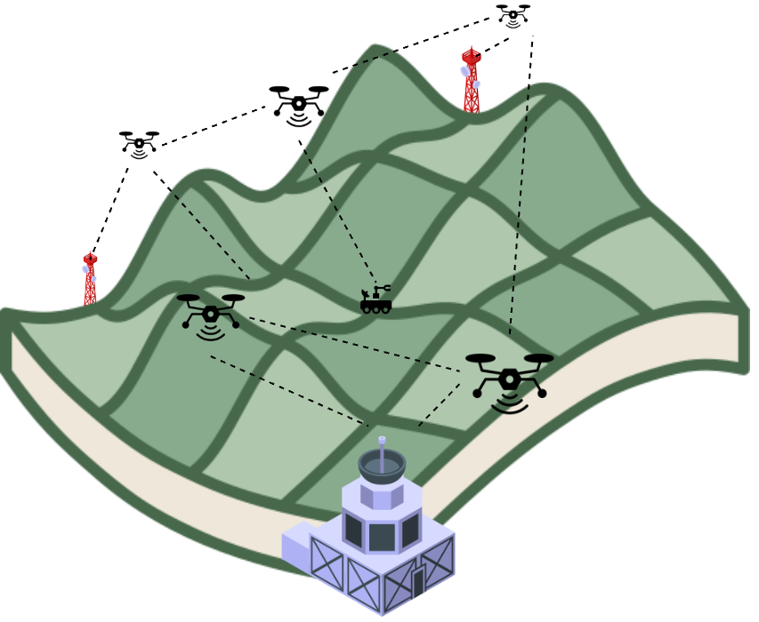
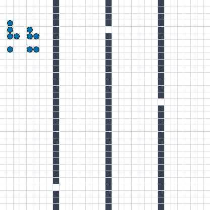
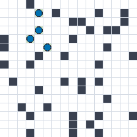

Local agents,
one mission.
A single robot is easy to reason about. Put a team together and something new appears at the top — a mission-level outcome no individual planned. We study how local behaviour composes, through the way agents talk, into what the team achieves — and when real teamwork emerges from purely local rules.

A team that only knows what's nearby
| Assumption | What it means (plainly) |
|---|---|
| Decentralized | No central brain — each agent decides for itself. |
| Partial observability | Each agent sees only nearby cells — a POMDP. |
| Range-limited comms | Talk only to in-range neighbours; the graph changes each step. |
| Mission-level reward | One shared reward for the whole team. |
Where this mission sits — the Sense / Organize / Act map
| Family | Team produces | Coupling |
|---|---|---|
 Sense | a shared picture | information |
 Organize | its own relational state (the network) | topology |
 Act Act | an effect on the world | resources |
We study the Sense × Organize composite (highlighted): cooperative coverage under a connectivity constraint — gather a shared map while keeping the comm graph connected.
Three layers, one bridge
The middle layer — the interaction layer — is the bridge that couples one agent to the mission. It's the protagonist of everything that follows.
the agent
Local input xᵢ, history, and a policy πᵢ mapping history → action.
the coupling
A time-varying graph Gₜ; each agent aggregates its neighbours' messages, cᵢ = Agg({m}). Local becomes collective.
the mission
A Dec-POMDP; team return J, and mission health Φ tracking whether the team can keep going.
| We measure | Meaning |
|---|---|
| coverage % | fraction of the world seen |
| λ₂ (Fiedler) | how connected the graph is — 0 means split |
| Φ | mission health — a running diagnostic |
Only a taste — the full model lives in Theory.
One picture, then we zoom in
It's all one loop. The world hands each agent a partial view; agents talk over the comm graph, decide, and act back on the world — while a training-time learner shapes the single shared policy they all run. Four parts. We open each one next.
Scroll — each part expands on top.
The world loop
The environment is an H×W grid with walls the team hasn't mapped yet. Every step, each agent gets a partial view — only the cells near it — plus who is in communication range right now (the graph Gₜ). It picks one of five moves (stay / N / E / S / W). The world applies all moves at once; the team's coverage and its connectivity λ₂ update; and the loop repeats for a fixed horizon.
The key property: the world never tells an agent what to do. There is no central controller — every decision is made locally, from local information.
Inside an agent
Every agent runs the same small network. A CNN reads its local map patch into features. A GNN then exchanges messages with in-range neighbours and blends their features into its own — this is where "talk to whoever's nearby" becomes math. The output is a belief z: a compact summary of what the agent understands. Two heads read z — a role (explore or relay) and a goal (roughly where to head) — and a small controller turns those into the actual move.
What actually travels between agents
Each agent gossips its belief — its partial coverage map and position — to the neighbours it can currently reach. The aggregation happens inside each agent: its own GNN pools the beliefs it receives (a permutation-invariant operation — order and count don't matter) and folds them into its state. There is no central fusion node; every agent does its own pooling. Over a few hops, local maps fuse into a shared picture — no agent ever sees the whole world, but together they approximate it.
The graph is fragile — move out of range and the messages stop. That is exactly why connectivity is written into the mission, not assumed.
Learning — CTDE
While training, a central critic sees the whole state; at run time each agent acts on local information only. Crucially, each agent is paid its own marginal contribution (a difference reward), not the team mean, and PPO nudges the shared policy θ. Same θ for everyone, critic used only in training → the trained agents are fully decentralized. Train together, act alone.
| Signal | Why | |
|---|---|---|
| coverage | + | reward fresh ground covered |
| connectivity (λ₂) | + | keep the comm graph linked |
| credit Dᵢ | per-agent | pay each its marginal contribution, not the team mean |
Credit breaks the huddle
The lever isn't a new module — it's what each agent is paid for. Reward every agent for its own marginal contribution (a difference reward) instead of one shared team reward, and a huddled team snaps into a sweep. On the 32²/10 four-map panel it wins everywhere: +7 to +23 coverage points, 2–6×. Real runs · cover_r = 0.


A relay backbone, not a trade-off
Credit covers more — but pure spreading breaks the comm graph at scale, because nothing chooses to hold. The fix is an explicit relay role: a few agents actively hold the graph so the rest sweep freely. In open floor the active "anchor" relay dominates — more coverage and more connectivity: a genuine shift of the frontier, not a slide along it.
| 32²/10 · open | coverage | connectivity |
|---|---|---|
| no role | 27.9% | 77% |
| + relay (anchor) | 30.0% | 85% |
Honest status. Coverage is solid. The connectivity metric proved noisy (an identical run read 51% vs 77%), so those comparisons are being re-measured before any headline number — see Findings.
Why the finding is sharp, not soft
Coverage is submodular — each extra agent adds a little less — so the team is subadditive, and "more agents cover more" is not the story. The sharp result is that the credit signal is the control parameter: with one shared reward the team huddles; pay each agent its marginal contribution and the same agents divide the labour — explore vs hold — and the right number of relays self-sizes. Change what the interaction layer credits, and the identical team flips between flooding and organising.
Full results, with the honest connectivity caveat, on Findings; the live rollouts are in the Simulator.
Outward along the missions
Read the formalism → ▶ Open the simulator →